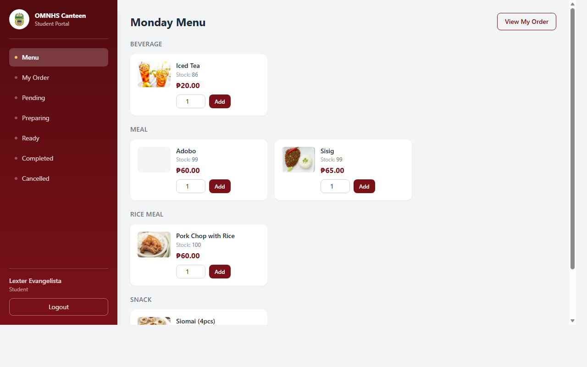

Students
Browse the day’s menu, build an order, choose a pickup time, and follow its status.
OMNHS Canteen is a role-based ordering and operations system that connects students, teachers, canteen staff, and administrators in one workflow.

Each account sees only the tools needed for its role. Customers order ahead, staff move orders through fulfillment, and administrators manage the data behind daily canteen operations.
Browse the day’s menu, build an order, choose a pickup time, and follow its status.
Use the same advance-ordering flow with a dedicated authenticated account.
Run POS checkout, manage the queue, confirm payments, update stock, and review sales.
Manage people, accounts, canteens, system settings, and activity records.
The workflow gives customers visibility while providing staff with an actionable queue. Stock is checked when payment is confirmed, and every order stays tied to its selected canteen.
The free demo server may need a short moment to wake after inactivity. This case study starts warming it as soon as the page opens.
308100-00001 / Evangelista308100-00001!EMP-001 / HernandezEMP-001!superadmin / superadmin123!Demo data may reset periodically. These accounts contain sample data only.